8/25/23:
This is my first journal entry. Today we did a challange using pipes and a marble. The goal was to get it in to the bucket and through this challange we got to learn a lot. We learned how to work together and identify problems inorder to find a solution.
9/11/23:
This week we worked on our first project, the Rube Goldberg project. We started of with creating our project with CAD and designing what it would look like. After putting our heads together my team and I begain to bring it to life using cardbord and rulers.
9/15/23:
Today we finished and tried out out project. We created a simple and consistent design that will always work, are project is called "vroom vroom vroom". We started by darwing out and measuering everything we needed to cut so all we had to do after was put it together using tape. We brought cars from home to act as our wheels and bring the needle into the balloon. At times the car would flip over while going down but we just reajusted it and then everything worked smoothly.
9/29/23:
We dissected a computer and were able to learn about all the pieces that go in to creating the base. We took it apart and put it back together. I would say taking it apart was the easy part but going back and trying to connect the wires back together is where we struggled. In the end we got it to work and we were able to put it together.
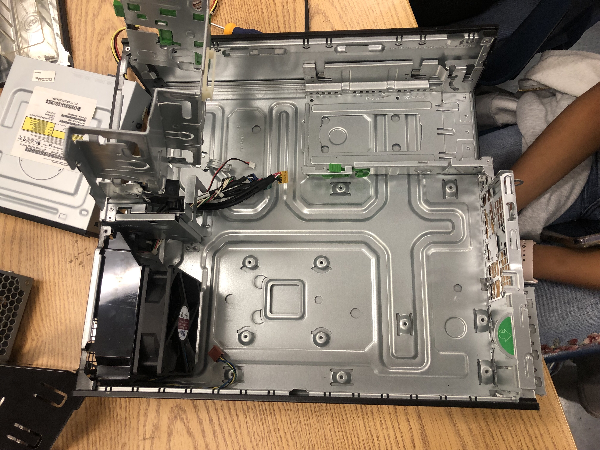
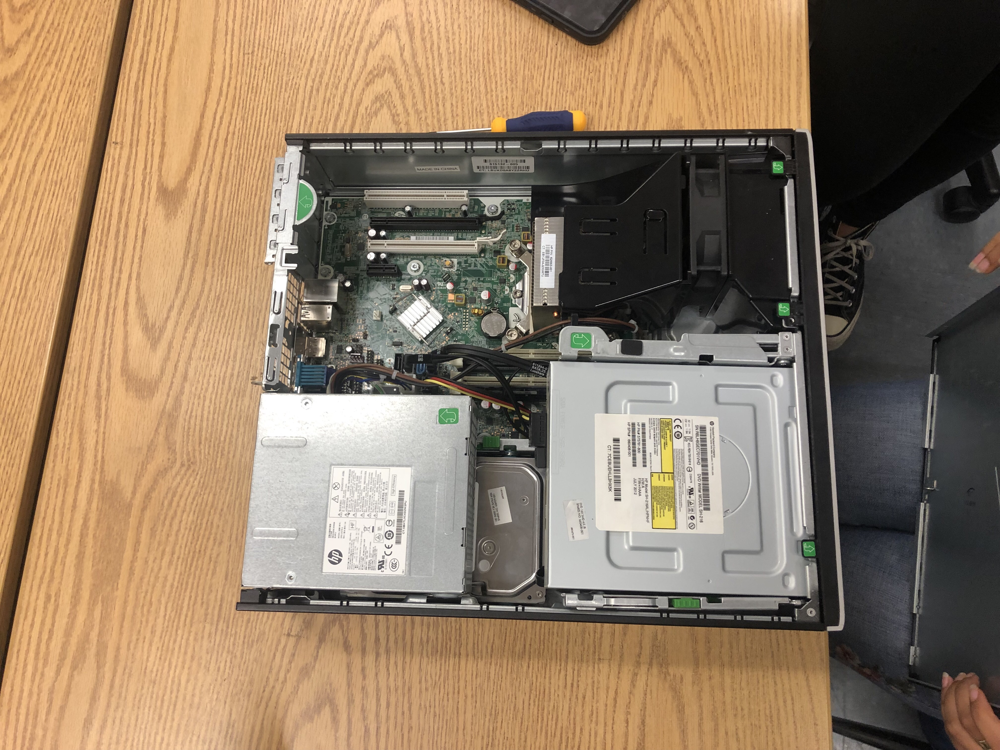
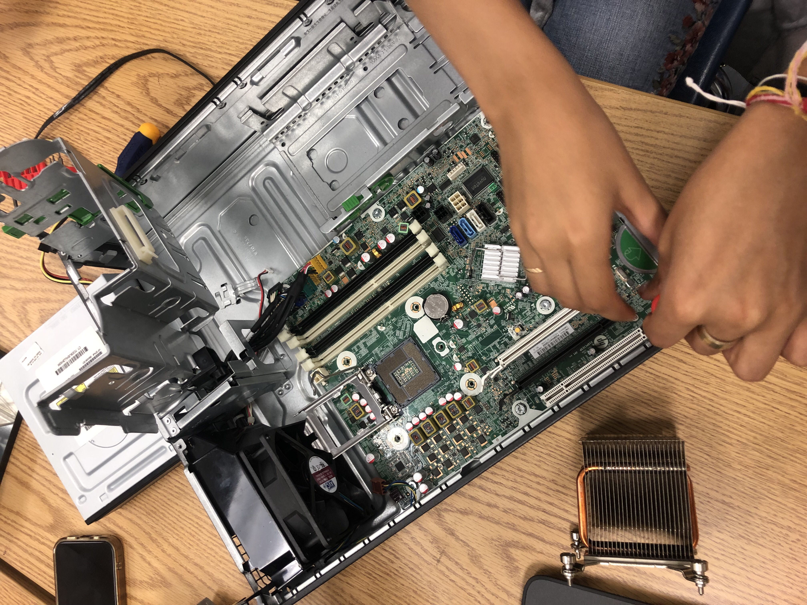
10/6/23:
Our project was to creat a hand. We struggled a lot because coming up with the perfect design took a lot of work. We originaly created a mitten hand however it was to small and didnt work. Then we creat one with individual fingers and that worked well eccept the string we were using to control the hand got in the way of picking up the bottle. We decided to ask for help to after looking at a friends desing we came up with a stronger plan. we decided to tape the string down and make individual joints to make the hand work.
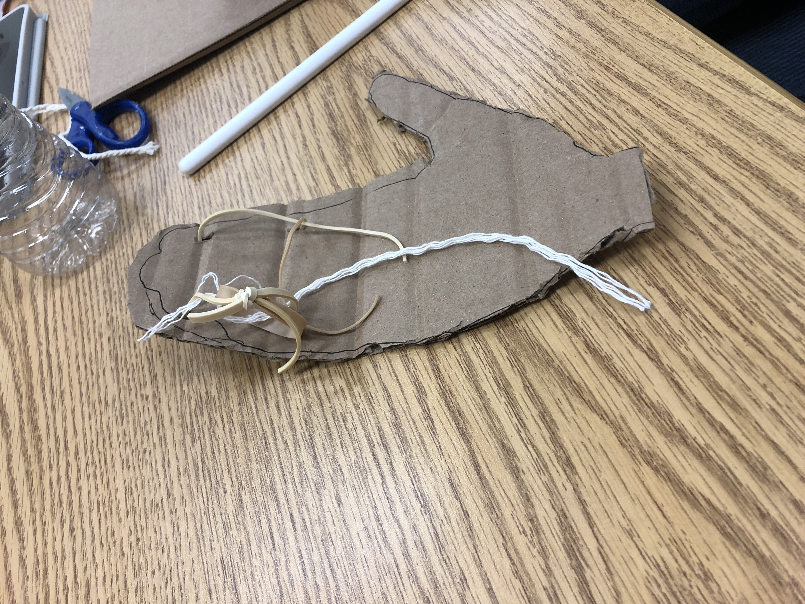
10/20/23:
We created a CAD at the start and though the final product didnt look lot like it, It allowed us to picture our ideas better. We used hot gleue and made 3 flaps to use as wings which we placed closer to the bottom of the 2 liter bottle which was out base. We also use paper to creat a cone and we placed that at the top of the bottle to act as our head. To lanch the bottle we filled it up with water, this acted as our fuel and alowed the rocket to thrust up in to the sky.
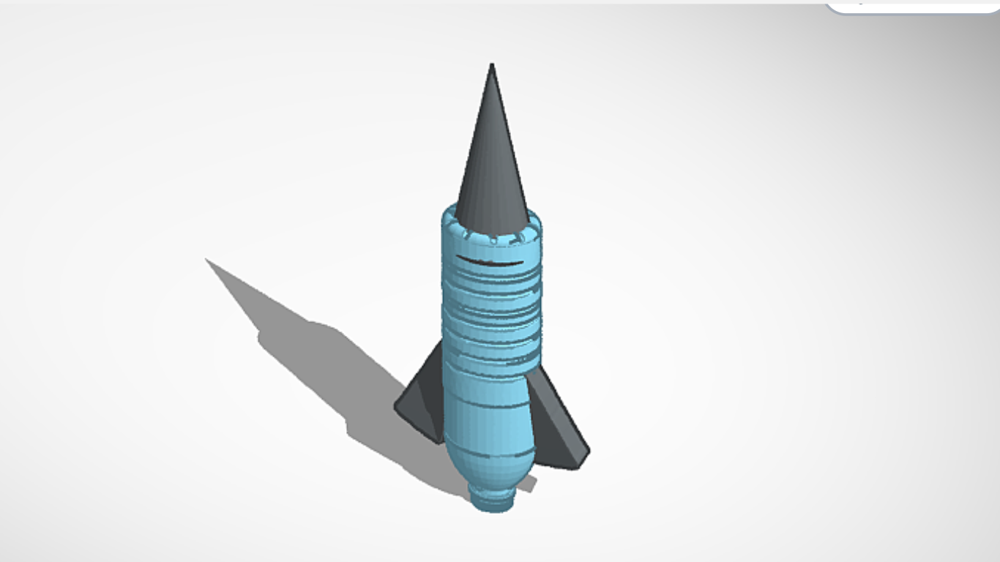
10/26/23:
This week we focused on enviormental engineering. Our job was to creat a water filter to clean dirty water. We used cotton at the bottom of our filter, sand for the next layer, then we put small pebbles on top of that, and our very first layer we used bigger pebbles. In the end even after filtering it many times the water still was not fully clean. We created a new filter with the same materials but we just doubled it. This worked a lot better and we got the water a litte cleaner.
11/3/23:
This week we started our electrical engineering unit. We started out with two slideshows, and then we did two worksheets. One worksheet was based on the slides, and the other worksheet was math based on Ohm's Law. That worksheet made me feel like I was back in physics. Anyways.. After the two worksheets, we completed two labs on tinkercad. The first lab was fairly simple, it was just creating a very basic circuit that made an LED light up. The second lab was a little more challenging. The first part was to create a circuit where the LEDs were in parallel and lit up. I misplaced some of the wires, but it was successful after I fixed it. The second part of the lab was to create a circuit that had LEDs light up in series. This one was a bit easier after figuring the first part out. Below is a picture of the first part of lab 2.
11/13/23:
We have been learning about electrical engineering. Or project for this week has been learning about bread boards and how we can connect wires to create full circutes and turn lights on and of. We had to do a lot of trial and error but in the end we finally got out lights to blink. We rewired some things and figuered out how each one connects and causes a reaction.
12/1/23:
We just finished the Business engineering unit. Overall I would say this was my favorite so far, we were able to see the process of how to create and execute a pitch. Our project for this unit was to think of a new idea, create slides, and pitch it to our class. We made the idea of show warmies which is a heatable show that can be worn outdoors, we can implement this idea into ski shoes and snowboarding boots. The main audience are the people who enjoy these types of snow activities and people who just live in the cold in general.
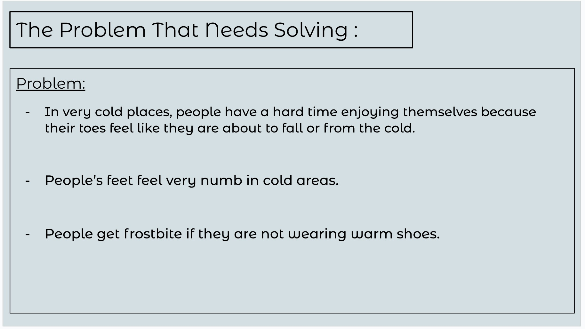
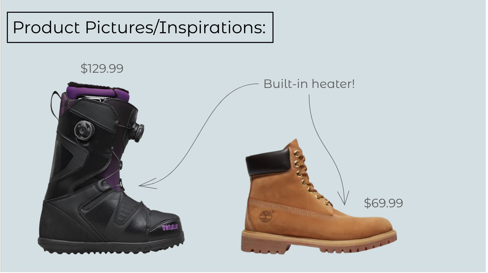
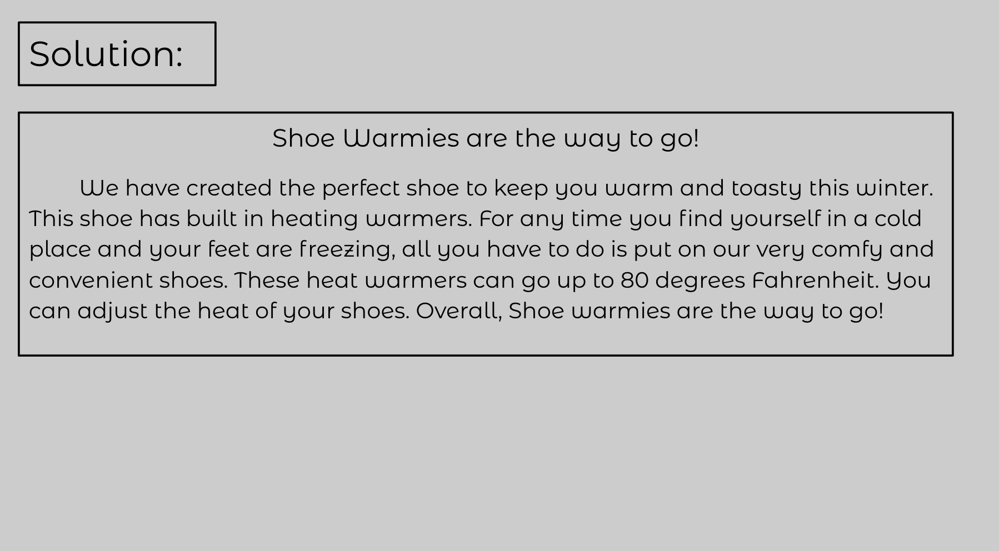
1-10-24:
1. Our bridge was 33.7 g
2. Our bridge held657 g
3. The ratio of the weight of the bridge to the weight held by the bridge was 21.5
4. The heaviest part of our bridge was probably the areas where the clips went to attach the bucket to the bridge. The weight was mostly from the extra glue we used to make sure the spaghetti was secure.
5. The design came mostly from pictures of bridges we saw online, some just from our memories of what bridges generally look like, especially the diagonal and straight beams that went across the bottom.
6. The design did not necessarily work as intended. Our bridge bent into a parentheses shape instead of laying out straight. Because of this, the bridge was shorter and more difficult to hold, and it probably made it more susceptible to breaking. The glue also detatched a part of the bridge from the other, so we had to reglue that about an hour before testing the bridge, so that made the bridge easier to break.
7. The point of failure was the part of the bridge where the glue detatched, which makes sense. Originally, that was not the suspected weakest point, but after the glue broke it definitely became the suspected weakest point.
8. Our bridge could have been better if we overlapped a lot of the spaghetti more, because I believe that's the reason the glue broke off of one of the parts of the bridge. Having dry glue would definitely prolong points of failure, but we unfortunatly did not have the time. I also have no idea why our bridge started bending so much, and I don't know how to fix it.
9. Below are pictures of the process of building our bridge:
10. I don't think these pictures are of our final bridge because I don't remember taking them while testing it, but here is some pictures of our first bridge:
11. Unfortunately we didn't take any videos of the bridge.
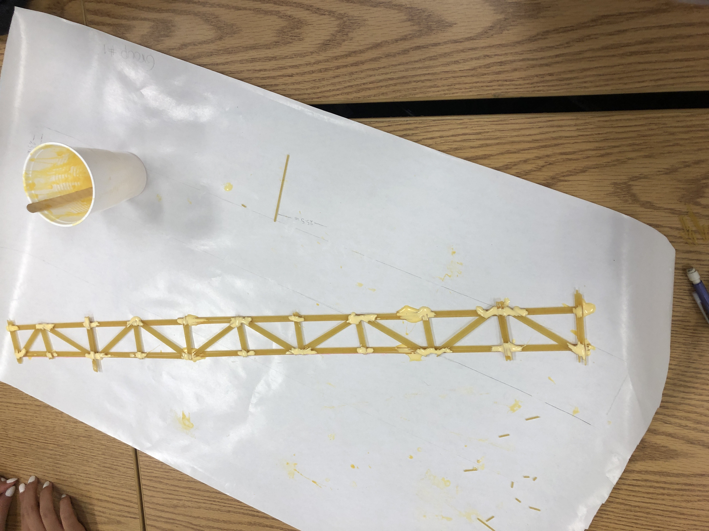
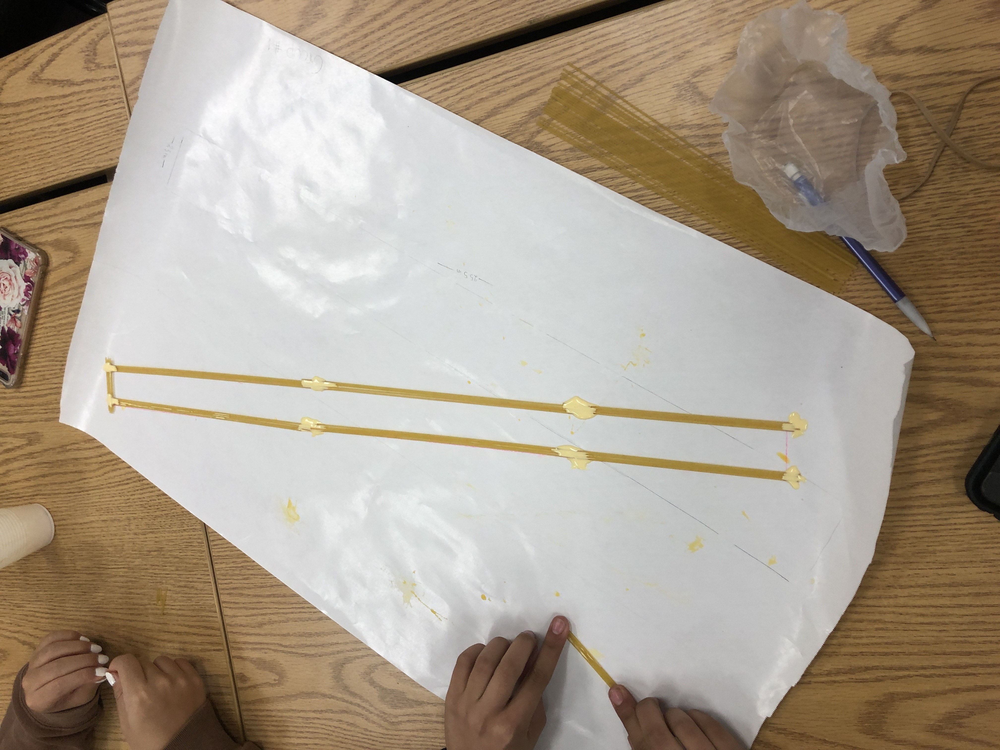
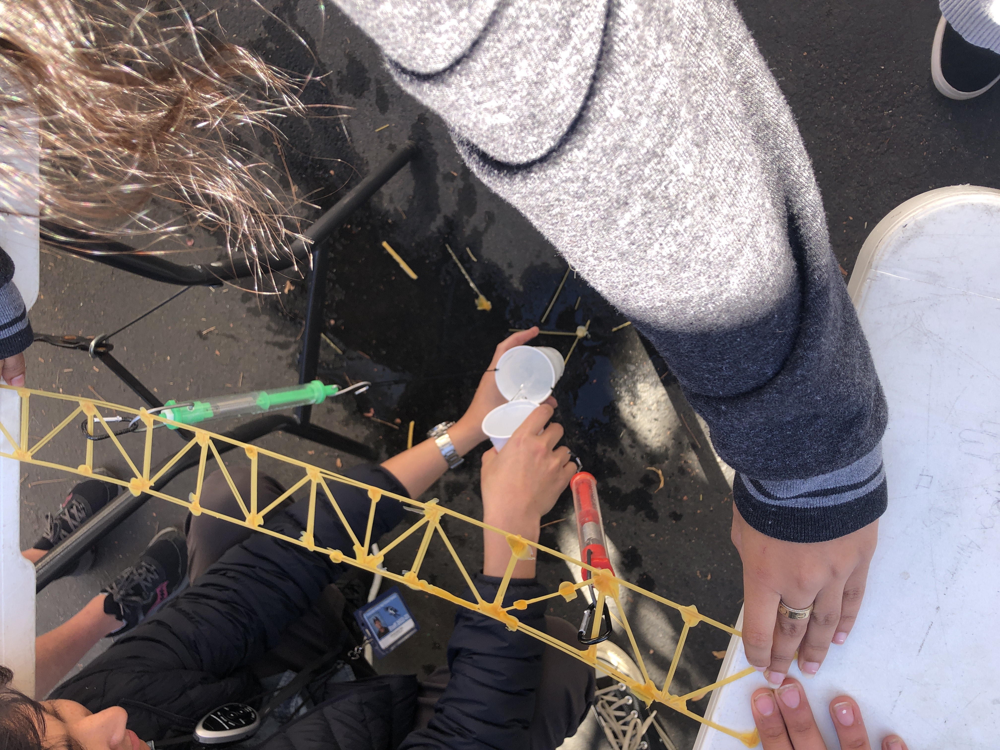
1-10-24:
This week we did our chemical engineering unit. We started off with a video, and then we went over the slides. Our project for this unit was to make oobleck. It's made with corn starch and water. The challenge was to figure out the ratio of water to corn starch. We found that it was about half to three quarters of the amount of corn starch. It was really easy and we finished it quickly, so we played with it for a little bit and then cleaned up. Here are some pictures of the oobleck
1-29-24:
This week we started a new project where we could choose between building a mousetrap car or an arduino car. Anushka and I chose to build a mousetrap car. We looked at a couple websites and youtube videos to solidify our design. Once we finished our research, we wrote a project proposal. After the proposal, we sketched our car with measurements, and after the sketch was finished, we created a CAD of the car. Pictures of the sketch and CAD are attached below. After that, we worked on a calculations worksheet where we calculated how far the car would go.